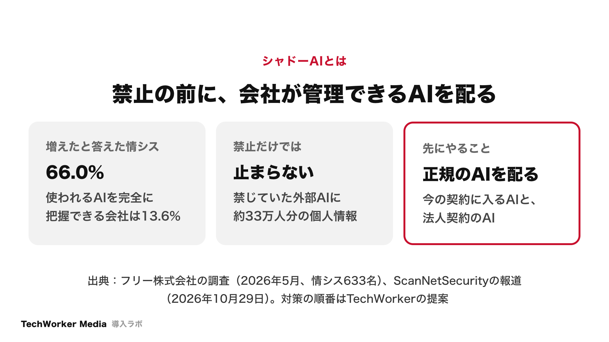
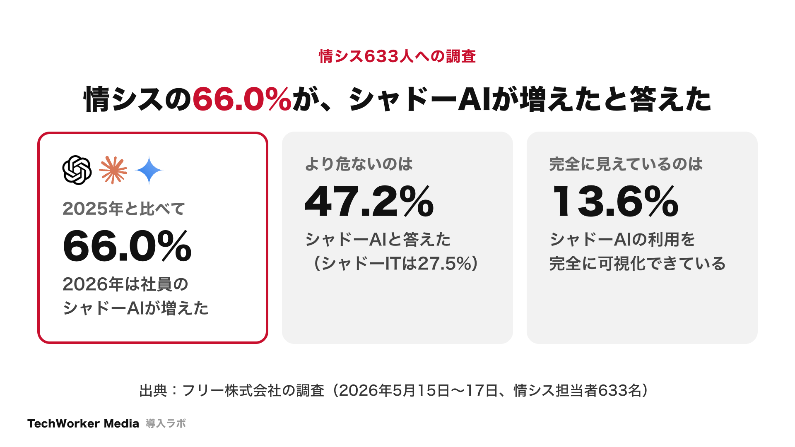
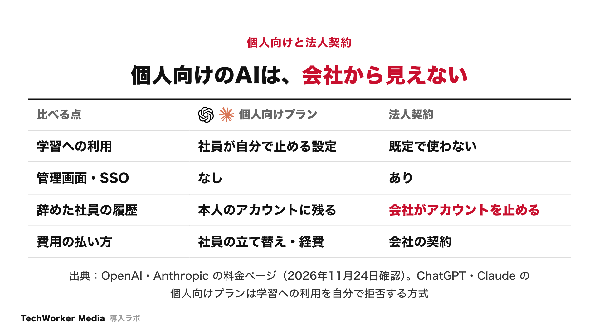
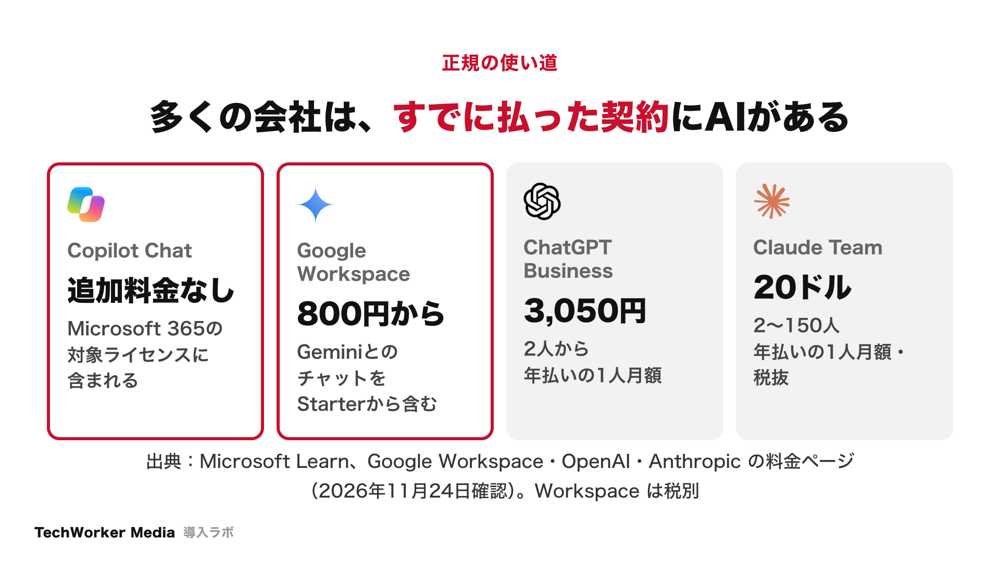
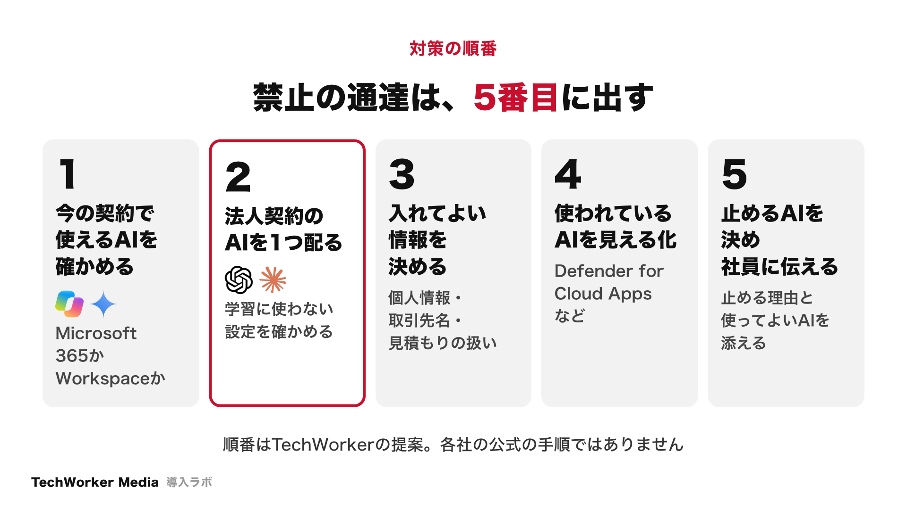

シャドーAIとは、会社のIT・セキュリティの部門が承認していない生成AIを、社員が自分の判断で業務に使うことです。
- 増えている：フリー株式会社が2026年5月に情シスの担当者633名に聞いた調査では、66.0%が2025年より増えたと答えました。
- 禁止だけでは止まらない：2026年10月には、利用を禁じていた外部の生成AIに、約33万人分の個人情報を含むデータが入力されたと公表されました。
- 先にやること：Microsoft 365やGoogle Workspaceの契約に入っているAIと、学習に使わない法人契約のAIを配ります。止めるのは、そのあとです。
調査の数字、各社の料金ページ、Microsoft Learnの手順（2026年11月24日確認）をもとに、対策の順番をまとめます。
シャドーAIとは何ですか？
会社が承認・管理していない生成AIを、社員が自分の判断で業務に使うことです。個人のアカウントのChatGPTやClaude、スマートフォンのAIアプリ、ブラウザの拡張機能が当たります。
原文シャドーAI：企業や組織のIT・セキュリティ部門が公式に承認・管理していない生成AIツールやサービスを、従業員が独断で業務に利用すること。
以前からあるシャドーITという言葉は、会社が把握していない機器やクラウドサービス全般を指します。シャドーAIはそのうち生成AIに絞った言葉です。社員が自分で契約したAIを持ち込む意味で、BYOAI（Bring Your Own AI）と呼ぶ記事もあります。
同じ調査で、情シスの担当者が挙げた増えた理由の上位3つは次のとおりです。
- スマートフォンで、AIを使う社員が増えた（214名）
- AIを使ったツールが増えた（202名）
- 拡張機能などで、意識せずにAIを使う場面が増えた（175名）
発表は、AIの機能がスマートフォンや既存のツールの拡張機能に標準で入ったことで、社員が意識しないままAIを使う環境が広がっているとみています。
シャドーAIはどのくらい増えていますか？
情シスの担当者の66.0%が、2025年より2026年のほうが社員のシャドーAIが増えたと答えています。一方で、使われているAIを完全に把握できている会社は13.6%です。

フリー株式会社の調査（2026年5月15日〜17日、Webアンケート、情シスの担当者633名）の主な数字です。
| 質問 | シャドーAI | シャドーIT |
|---|---|---|
| どちらのリスクが大きいか | 47.2% | 27.5%（わからない 25.3%） |
| 完全に可視化できている | 13.6% | 13.2% |
| 対策できている | 42.3% | 46.3% |
出典：フリー株式会社「シャドーAI・シャドーITに関する実態調査」（PR TIMES、2026年5月25日、2026年11月24日確認）
シャドーAIのほうが危ないと感じていても、見えている割合と対策の割合はシャドーITとほとんど変わりません。同じ調査では、情シスが兼務か専任1人の会社が43.0%でした。少ない人数で、増えるAIを1つずつ止めて回るのは難しい、というのがTechWorkerの見方です。
なぜ社員は会社に黙ってAIを使うのですか？
ITmediaの連載は、怠けたいという理由の人は少ないはずだとし、会社のAIでは物足りないから使う場合もあると見ています。止める前に、社員が何に使いたいのかを知る必要がある、というのがTechWorkerの考えです。
ITmediaビジネスオンラインの連載（2026年11月9日）は、AI導入を支援する筆者が受けた複数の相談を基にした架空の例として、次のような場面を紹介しています。
- 従業員約400人の部品メーカーで、情シスは2人。前の年に、全社員が使える社内向けの生成AIを入れていました。
- 営業で成績が上位の社員が、社内のAIは使いものにならないと言って、個人で契約した生成AIに商談のメモを貼り、提案書の下書きを作っていました。取引先名や見積もりの金額が含まれていた可能性があります。
- 経営陣からは全面禁止の通達を出すよう指示が出ましたが、その社員は社内でいちばんAIを使いこなしている人でした。
この例のように、個人のAIを使っていたのが社内でいちばんAIを使いこなす人だった場合、禁止の通達だけを出すと、その人の仕事の進め方も止まります。
シャドーAIの何が危ないのですか？
入れた情報の扱いを会社が決められないことです。学習への利用を止めるかどうかは社員が自分で決め、会社は誰が何を入れたかを確かめられず、辞めた人の履歴も会社では消せません。

- 学習への利用：ChatGPTとClaudeの料金ページは、個人向けプランを、学習への利用を利用者が自分で拒否する方式としています。法人契約は既定で学習に使いません。
- 会社から見えない：Claudeの料金ページでは、個人向けプランのSSOと一元的な管理の欄が、どれもいいえです。ChatGPTも、SSOと管理コンソールを法人向けのプランに載せています。誰がどの取引先の情報を入れたかを、会社は後から確かめられません。
- 辞めた後も残る：個人のアカウントは本人のものなので、辞めた人の会話の履歴を会社は消せません。法人契約には管理画面があり、会社がメンバーを管理できます。
実際の事案も公表されています。報道によると、大手メーカーのグループで管理本部の機能を担う会社が、2026年10月23日に次の内容を発表しました。
- 人事のシステムを入れるプロジェクトのメンバーが、グループの従業員・元従業員とその家族の個人情報を含むデータを、外部の生成AIのサービスにアップロードしました。
- データは約33万人分です。
- 会社は外部の生成AIの利用を禁止しており、外部からの不正な操作ではなく、メンバーによるルールの違反だったと説明しています。
この事案では、禁止の決まりがあっても外部のAIが使われました。決まりだけに頼らず、正規の使い道を用意する理由がここにあります。
禁止すれば防げますか？
禁止だけでは防げません。先に、会社が管理できるAIを配ります。多くの会社では、すでに払っているMicrosoft 365やGoogle Workspaceの契約に、使えるAIが入っています。

| 正規の使い道 | 1人の月額 | 入れた情報の扱い | 条件 |
|---|---|---|---|
| Copilot Chat | 追加料金なし（Microsoft 365の対象のライセンスに含む） | 会社のアカウントでサインインすると、Enterprise Data Protectionで守られる | Microsoft 365の会社 |
| Google WorkspaceのGemini | Starter 800円、Standard 1,600円、Plus 2,500円（年払い・税別） | 企業のデータをモデルの学習に使わない | Google Workspaceの会社 |
| ChatGPT Business | 3,050円から（年払い） | 既定で学習に使わない | 2人から |
| Claude Team | 20ドル（年払い・税抜） | 既定で学習に使わない | 2〜150人 |
出典：Microsoft Learn「What is Microsoft Copilot?」、Google Workspace「料金」、OpenAI「ChatGPT 料金」、Anthropic「Claude Pricing」（いずれも2026年11月24日確認）。ChatGPTの円の額は日本から開いたときの表示で、消費税の扱いは料金ページに書かれていません。Claudeは米国の料金ページの表示で税抜、日本から開くと消費税10%込みの22ドルと表示されます
OpenAIの日本向けの料金ページは、Businessについて次のように書いています。
原文デフォルトではビジネスデータを学習に使用しません
Google Workspaceの料金ページによると、いちばん安いStarterにも、GmailのGeminiと、Geminiとのチャットが含まれます。チャットについては、企業のデータがモデルの学習に使われることはない、と同じ行に書かれています。ドキュメントやMeetの中でGeminiを使うには、Standard以上が要ります。
個人のAIを使っていた社員には、会社が配るAIが何に使えるかを、その人の業務で見せるのが早い、とTechWorkerは考えています。4社の法人契約の違いは生成AIの法人契約の比較に、追加料金なしのCopilot Chatと有料のMicrosoft 365 Copilotの違いはCopilot Chat BasicとPremiumの研修の分け方にまとめています。主要4社の料金比較表と、社内利用ルールの雛形は、下の枠から受け取れます。
社内で使われているAIはどう見つけますか？
MicrosoftのDefender for Cloud Appsを使っている会社は、アプリの一覧を生成AIの種類で絞ると、社内で使われているAIと危険度の点数が分かります。止めたいAIには非承認の印を付けます。
Microsoft Learnの「Manage generative AI apps for your organization」の手順は、次のとおりです。
- カタログで見る：Microsoft Defenderのポータルで［Cloud apps］＞［Cloud app catalog］を開き、［Category］の絞り込みで［Generative AI］を選びます。AIのアプリが危険度の点数と一緒に並びます。
- 社内で使われているAIを見る：［Cloud apps］＞［Cloud discovery］の［Discovered apps］タブで、同じく［Generative AI］に絞ります。
- 止める：止めたいAIの行の右端の「…」から［Unsanctioned］（非承認）を選びます。
- 新しいAIを知らせる：種類が生成AIのアプリが新しく使われたら知らせるポリシーを作ります（条件は Category equals Generative AI）。
原文“When an app is marked as unsanctioned, it's automatically blocked across devices that are onboarded to Defender for Endpoint. However, your security team can specify whether to warn and educate users instead of blocking apps.”
日本語訳アプリを非承認にすると、Defender for Endpointに登録した端末で自動的に止まります。ただし、セキュリティの担当者は止める代わりに利用者に警告して使い方を伝えるよう設定することもできます。
MicrosoftはDefender for Cloud Appsのカタログに、生成AIのアプリを千以上加えたと説明しています。Microsoft EntraのGlobal Secure Accessを使っている会社は、通信からChatGPTやClaude、MCPサーバーなどへの接続を見つけられます。Microsoft Entra管理センターの［Global Secure Access］＞［Applications］＞［Insights and Analytics］を開き、［Generative AI apps and tools］で絞り込みます。
Microsoftの説明では、自動で止まるのはDefender for Endpointに登録した端末で、Global Secure Accessが調べるのは通信です。会社が管理していない私物のスマートフォンは、どちらの説明でも対象に挙がっていません。こうした製品を使っていない会社は、まず社員に、仕事でどのAIを何に使っているかを聞くのが早い、というのがTechWorkerの考えです。その際は、答えた人を責めないと先に伝えることを勧めます。
対策は何から始めればよいですか？
今の契約で使えるAIを確かめ、法人契約のAIを1つ配るところから始めます。禁止の通達は正規の使い道と入れてよい情報を決めたあと、最後に出します。

ここからはTechWorkerの提案です。上の調査と事案、各社の公式の情報から、順番を5つに分けました。
- 今の契約で使えるAIを確かめる：Microsoft 365ならCopilot Chat、Google WorkspaceならプランごとのGeminiの範囲を確かめます。
- 法人契約のAIを1つ配る：今の契約のAIで足りない部署には、学習に使わない法人契約を足します。個人のAIを使っていた人を、最初の利用者に選びます。
- 入れてよい情報を決める：個人情報、取引先名、見積もりの金額など、入れてよいものと入れないものを1枚に書きます。
- 使われているAIを見える化する：Defender for Cloud Appsなどで、社内で使われている生成AIの一覧を作ります。
- 止めるAIを決め、社員に伝える：止める理由と、代わりに使ってよいAIを一緒に伝えます。いきなり止めず、警告から始める設定もあります。
入れてはいけない情報を、会社が管理するAIの側で止める方法はAI DLPとはで扱っています。ChatGPTの契約の詳しい選び方はChatGPTの法人契約と料金に、Workspaceの各プランのGeminiの範囲はGeminiの法人契約と料金にまとめています。
よくある質問
シャドーITは会社が把握・許可していない機器やクラウドサービスを業務に使うことです。シャドーAIはそのうち生成AIに絞った言葉です。フリー株式会社の調査では、リスクが大きいほうにシャドーAIを選んだ情シスの担当者が47.2%、シャドーITが27.5%でした。
学習の設定だけでは足りません。個人向けプランには、会社が使う人を管理する画面やSSOがなく、辞めた人の会話の履歴も本人のアカウントに残ります。会社として使うなら、既定で学習に使わない法人契約にして、会社がメンバーを管理できる形にします。
正規の入口として配れます。Microsoft LearnはCopilot Chatを、対象のMicrosoft 365のライセンスに含まれる基本の機能としています。会社のアカウント（Microsoft Entra）でサインインすると、Enterprise Data Protectionで守られるとも書いています。何を入れてよいかは社内の決まりで別に決めます。
この記事で確かめたMicrosoftの手順で自動で止まるのは、Defender for Endpointに登録した端末です。会社が管理していない私物のスマートフォンは、確かめた手順の対象に挙がっていません。フリー株式会社の調査では、シャドーAIが増えた理由の1位がスマートフォンでのAIの利用（214名）でした。私物の端末での利用は、正規のAIを配ることと社内の決まりで減らします。
今の契約のAIを配るだけなら、追加の費用はかかりません。Copilot Chatは対象のMicrosoft 365のライセンスに含まれ、Google WorkspaceはStarterからGeminiとのチャットを含みます。法人契約を足す場合、ChatGPT Businessは年払いで1人月3,050円から、Claude Teamは年払いで1人月20ドル（税抜）です（2026年11月24日確認）。
次の一歩は何から始めればよいですか？
自社のMicrosoft 365かGoogle Workspaceの契約に、どのAIが入っているかを確かめることから始めます。
- 今の契約で使えるAIを確かめ、足りない部署を決めます。
- 個人のAIを使っていた社員に、仕事で何に使っているかを聞きます。
- 入れてよい情報の1枚を作り、正規のAIと一緒に配ります。
TechWorkerでは生成AIの研修を、受講者の実際の業務1本から組みます。配ったAIが使われているかを、30日後に使った人の割合と1件の時間で測って報告します。検討段階のご相談だけでも歓迎です。
出典と確認範囲
確認日：2026年11月24日。パナソニック オペレーショナルエクセレンス株式会社の発表（2026年10月23日）は、当社の環境から公式のページを開けなかったため、ITmediaビジネスオンラインとScanNetSecurityの報道で確かめました。料金と機能は変わるため、申込みや設定の時点で公式情報を確認してください。対策の順番と、社員に聞く進め方はTechWorkerの提案です。Defender for Cloud AppsとGlobal Secure Accessの画面は、TechWorkerでは確かめていません。
- フリー株式会社「シャドーAI・シャドーITに関する実態調査」（PR TIMES、2026年5月25日）
- ITmediaビジネスオンライン「勝手に社外AIを使うエース社員に困っています……どうすべき？：AI導入100本ノック」（2026年11月9日）
- ScanNetSecurity「ルールに違反し外部生成AIサービスにパナソニックグループ従業員の個人情報をアップロード」（2026年10月29日）
- Microsoft Learn「Manage generative AI apps for your organization」
- Microsoft Learn「How do I discover AI apps and the sensitive data these use in my organization?」
- Microsoft Learn「Shadow AI discovery in Global Secure Access」（2026年6月11日更新）
- Microsoft Learn「What is Microsoft Copilot?」
- OpenAI「ChatGPT 料金」
- Anthropic「Claude Pricing」
- Google Workspace「料金」
- Google Workspace ヘルプ「Generative AI in Google Workspace Privacy Hub」（2026年10月6日更新）
- ＠IT「シャドーAI（Shadow AI）とは？」（2025年12月24日）